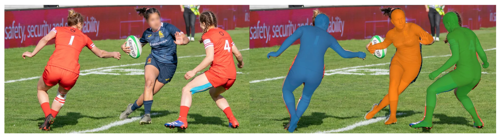
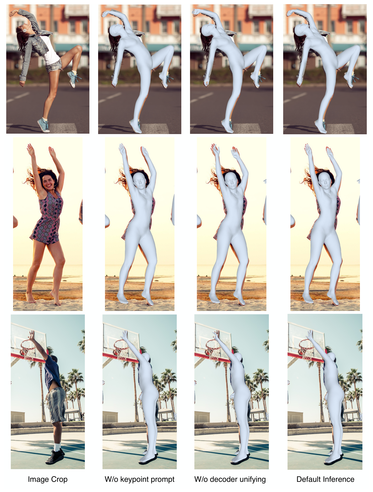
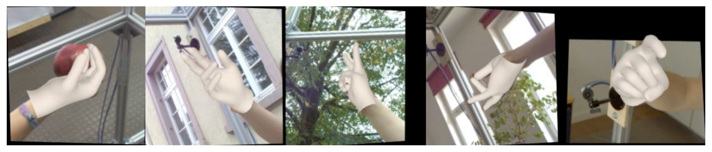

SAM 3D Body: a promptable full-body HMR model that does not give up on hands
The short version. Human mesh recovery (HMR) estimates a 3D human mesh, meaning a connected surface of vertices and faces, from an image. Full-body HMR is harder than body-only HMR because the same model must recover the torso and limbs while also resolving small, articulated hands. SAM 3D Body (3DB) attacks that conflict with a promptable encoder-decoder: a shared image encoder reads the crop, while separate body and hand decoders specialize on different evidence and losses. A decoder is the network head that turns image features and query tokens into pose, shape, camera, skeleton, and keypoint predictions; promptable means the decoder can also condition on extra cues such as 2D keypoints or segmentation masks. The key merge step is re-prompting: the hand decoder's wrist location and the body decoder's first-pass elbow location become keypoint prompts for a second body-decoder pass, which produces a refined full-body mesh that stays anatomically consistent at the elbows. The body representation is Momentum Human Rig (MHR), a parametric rig that separates skeletal structure from soft-tissue shape instead of mixing both in one shape space. The claim is calibrated: 3DB is the first single model that is simultaneously strong on common body benchmarks and competitive with hand-only experts, though it does not win every metric. All millimeter metrics in this page are lower-is-better unless stated otherwise.

1. Motivation: why full-body HMR breaks at the hands
Body-only HMR can spend its capacity on the torso, limbs, global camera, and rough body shape. Hand mesh recovery can crop tightly around the hand and optimize for fingers. Full-body HMR has to do both from one image, often with the hand occupying only a few dozen pixels inside a 512 x 512 body crop.
The paper identifies three sources of conflict. First, body and hand prediction need different effective resolutions. Second, the body needs a global perspective camera, while a hand crop behaves more like a local wrist-centered problem. Third, hand datasets supervise free-moving wrists and fingers, while full-body datasets constrain the wrist through the arm and shoulder. A single output head has to compromise across these pressures.
Q: Why not run a body expert and a hand expert, then paste the hand onto the wrist?
A: The wrist is not an isolated joint. If the hand pose changes the wrist orientation, the forearm and elbow have to remain plausible too. A naive paste can improve fingers while damaging the neighboring arm. 3DB keeps the hand expert, but it uses the model's own prompt-following ability to reconcile wrist and elbow before producing the final full-body mesh.
Takeaway: The problem is not estimating hands in isolation; it is estimating hands without breaking the body they attach to.
There is also a representation issue. SMPL, the Skinned Multi-Person Linear model, is the standard parametric body model for pose and shape. SMPL-X extends that family to expressive body, hands, and face through components such as MANO for hands and FLAME for faces. The paper argues that SMPL-style shape spaces entangle bone lengths with soft-tissue variation, which makes the parameters less directly interpretable. MHR is chosen because it explicitly separates skeleton and surface shape.
2. Contributions: what the paper actually claims
The paper makes three model-side claims. First, 3DB is a promptable encoder-decoder that can use optional 2D keypoints, masks, or camera information for controllable HMR. Second, the architecture uses one image encoder and two decoders, one for the body and one for the hands, to reduce the body-versus-hand optimization conflict. Third, it uses MHR as the full-body mesh representation, so pose, skeleton, shape, and camera can be predicted as structured rig parameters.
The data-side claim is just as central. A data engine is the system that finds images, routes them for annotation, fits meshes, and feeds failures back into the next mining round. Here the engine uses a vision-language model (VLM), meaning a model that scores or retrieves images from text-like descriptions, to mine hard cases such as occlusion, unusual poses, low visibility, interactions, extreme scale, and hand-body coordination. The paper reports 7 million annotated images from licensed stock photos, in-the-wild datasets, multi-view capture, hand datasets, and synthetic data.
The result claim is narrower than a slogan. On common body benchmarks, 3DB is best or near-best across 3DPW, EMDB, RICH, COCO, and LSPET, but NLF is better on RICH where NLF is trained on RICH and 3DB is not. On FreiHand, 3DB matches the best PA-MPJPE in the table at 5.5 mm, but it loses on PA-MPVPE and F-scores to hand-only methods trained on FreiHand. This is why the accurate statement is: 3DB is a single full-body model that reaches body-specialist strength and approaches hand-specialist strength, not a model that wins every column.
3. Datasets and representation: the scale is part of the method
The training set mixes single-view in-the-wild images, multi-view datasets, hand-centric datasets, and synthetic data. The table below transcribes the dataset list from the paper. A row marked * provides samples for the hand decoder.
| Dataset | # Images / Frames | # Subjects | # Views |
|---|---|---|---|
| MPII human pose | 5K | 5K+ | 1 |
| MS COCO | 24K | 24K+ | 1 |
| 3DPW | 17K | 7 | 1 |
| AIChallenger | 172K | 172K+ | 1 |
| SA-1B | 1.65M | 1.65M+ | 1 |
| Ego-Exo4D | 1.08M | 740 | 4+ |
| DexYCB | 291K | 10 | 8 |
| EgoHumans | 272K | 50+ | 15 |
| Harmony4D | 250K | 24 | 20 |
| InterHand* | 1.09M | 27 | 66 |
| Re:Interhand* | 1.50M | 10 | 170 |
| Goliath* | 966K | 120+ | 500+ |
| Synthetic* | 1.63M | - | - |
Each dataset family plays a different role. SA-1B and the other single-view sources supply in-the-wild appearance and pose diversity. Multi-view data such as Ego-Exo4D, Harmony4D, Re:Interhand, and Goliath reduces depth ambiguity and gives stronger geometric supervision. Synthetic data gives accurate MHR parameters under diverse identities, clothing, camera angles, and contexts. Hand rows train both the body and hand decoders, using wrist-truncated hand samples for the hand decoder.
The evaluation benchmarks also need names. 3DPW is a 3D human pose benchmark captured in the wild. EMDB is used as an out-of-domain 3D body benchmark. RICH is a human-scene interaction dataset. COCO and LSPET are 2D pose benchmarks in this paper's table. FreiHand is a hand mesh benchmark. Hi4D, Harmony4D, SA1B-Hard, and SA1B-MP appear later in prompt and mask-conditioned evaluation.
4. Pipeline: mining hard images, then fitting better pseudo-ground truth
The data engine exists because more frames are not automatically more diversity. A large video collection can contain many near-duplicates in pose, background, clothing, and camera. 3DB instead mines tens of millions of images for cases where current HMR models are weak.

The mining loop starts with failure analysis. The current 3DB model is evaluated on annotated images, hard examples are visualized by keypoint location error, and a human writes short descriptions of the failure. Those words and images become VLM prompts. The VLM then selects new images showing occlusion, unusual poses, interactions, extreme scale, low visibility, or hand-body coordination, and those images are routed for annotation.
The annotation pipeline has three main fitting paths. Manual annotation corrects 2D joints and visibility labels. Single-image fitting initializes MHR from the current 3DB prediction, adds 595 dense 2D keypoints from a high-capacity keypoint detector, and refines the rig with 2D reprojection, initialization anchoring, and pose/shape priors. Multi-view fitting triangulates synchronized 2D keypoints into sparse 3D points, then alternates camera, shape, skeleton, and pose updates with 3D keypoint losses and temporal smoothness.
What the fitting loss is doing
The single-image objective keeps projected dense keypoints close to detected 2D keypoints, keeps the solution near the current model initialization, and uses learned priors to avoid impossible poses. The multi-view objective adds triangulated 3D keypoints and temporal smoothness, which reduces depth ambiguity. If the initialization anchor is removed, fitting can drift to a mesh that matches keypoints but no longer preserves a plausible body. If the multi-view 3D term is absent, the fit falls back toward the single-image ambiguity the pipeline is trying to escape.
{kind=link}


5. Method: shared encoder, two decoders, one re-prompted body
3DB first normalizes a human crop $I$ and feeds it through an image encoder. Optional hand crops $I_{\mathrm{hand}}$ can go through the same encoder to produce higher-resolution hand features. The equations in the paper are simple:

The decoder input is a sequence of query tokens. The MHR and camera token encodes the initial rig estimate. Prompt tokens encode optional 2D keypoints. Auxiliary tokens help predict 2D and 3D keypoints. Optional hand-position tokens help the body decoder locate hands. These tokens are concatenated, and the decoder attends to image features through cross-attention.
The first output token is passed through a multilayer perceptron to regress MHR parameters:
The hand decoder can produce another set of hand outputs from $F_{\mathrm{hand}}$. During inference, 3DB defaults to the body decoder and optionally merges hand decoder output when hands are detected. The merge is not a direct paste. The paper says direct integration into the middle of the MHR kinematic tree can introduce errors in adjacent joints, especially elbows.
Q: What exactly is re-prompting here?
A: It is a second pass through the promptable body decoder. The hand decoder gives the wrist location, and the body decoder gives the elbow location. Those locations become keypoint prompts. The body decoder then predicts a refined full-body pose that respects both cues, and the local hand MHR parameters are merged along the kinematic tree.
Takeaway: The prompt interface is not just for users; it is also the internal mechanism that makes the two decoders agree.
{kind=link}

6. Training and inference: what is stated, and what is not
The training objective is a weighted multi-task loss. It includes 2D and 3D keypoint losses, MHR parameter losses, joint limit penalties, hand box regression losses, and prompt consistency terms. The paper uses learnable per-joint uncertainty to modulate keypoint loss by confidence, and it introduces some terms, such as 3D keypoint losses, with warm-up schedules.
For 3D body and hand keypoints, the paper normalizes by pelvis and wrist locations before computing the loss. Hand keypoints are weighted by annotation availability. For 2D prompts, the prompted keypoint is upweighted so the model learns to follow user or system input. For hand detection, 3DB uses GIoU and L1 losses, predicts uncertainty for hand boxes, and turns off the hand decoder on hand-occluded samples during inference.
The paper evaluates two model variants. 3DB-H uses a ViT-H backbone with 632M parameters. 3DB-DINOv3 uses a DINOv3 encoder with 840M parameters. Inputs are resized to 512 x 512 for the image encoder. An off-the-shelf field-of-view estimator such as MoGe-2 provides camera intrinsics for inference. Training GPU-hours, full learning-rate schedule, training length, and exact numeric loss weights are not stated in the paper.
MPJPE is mean per-joint position error in millimeters. PA-MPJPE is Procrustes-aligned MPJPE, where a rigid alignment is applied before measuring joint error. PVE is per-vertex error in millimeters. PA-MPVPE is Procrustes-aligned mean per-vertex position error for the hand mesh. PCK is percentage of correct keypoints, so higher is better. F@5 and F@15 are hand-surface F-scores at 5 mm and 15 mm thresholds, so higher is better.
7. Experiments: body, hands, unseen domains, and human preference
Before comparing numbers, note the markers. Rows or entries marked † use publicly released checkpoints. Rows marked * are trained using RICH. These markers matter most for RICH, where NLF-L+fit is trained on RICH while 3DB is not.
7.1 Common body benchmarks
| Model | 3DPW PA↓ | 3DPW MPJPE↓ | 3DPW PVE↓ | EMDB PA↓ | EMDB MPJPE↓ | EMDB PVE↓ | RICH PA↓ | RICH MPJPE↓ | RICH PVE↓ | COCO PCK↑ | LSPET PCK↑ |
|---|---|---|---|---|---|---|---|---|---|---|---|
| HMR2.0b | 54.3 | 81.3 | 93.1 | 79.2 | 118.5 | 140.6 | 48.1† | 96.0† | 110.9† | 86.1 | 53.3 |
| CameraHMR | 35.1 | 56.0 | 65.9 | 43.3 | 70.3 | 81.7 | 34.0 | 55.7 | 64.4 | 80.5† | 49.1† |
| PromptHMR | 36.1 | 58.7 | 69.4 | 41.0 | 71.7 | 84.5 | 37.3 | 56.6 | 65.5 | 79.2† | 55.6† |
| SMPLer-X-H | 46.6† | 76.7† | 91.8† | 64.5† | 92.7† | 112.0† | 37.4† | 62.5† | 69.5† | - | - |
| NLF-L+fit* | 33.6 | 54.9 | 63.7 | 40.9 | 68.4 | 80.6 | 28.7† | 51.0† | 58.2† | 74.9† | 54.9† |
| WHAM (video) | 35.9 | 57.8 | 68.7 | 50.4 | 79.7 | 94.4 | - | - | - | - | - |
| TRAM (video) | 35.6 | 59.3 | 69.6 | 45.7 | 74.4 | 86.6 | - | - | - | - | - |
| GENMO (video) | 34.6 | 53.9 | 65.8 | 42.5 | 73.0 | 84.8 | 39.1 | 66.8 | 75.4 | - | - |
| 3DB-H | 33.2 | 54.8 | 64.1 | 38.5 | 62.9 | 74.3 | 31.9 | 55.0 | 61.7 | 86.8 | 68.9 |
| 3DB-DINOv3 | 33.8 | 54.8 | 63.6 | 38.2 | 61.7 | 72.5 | 30.9 | 53.7 | 60.3 | 86.5 | 67.8 |
3DB is strongest on EMDB: the best 3DB row reaches 38.2 PA-MPJPE, 61.7 MPJPE, and 72.5 PVE, ahead of NLF's 40.9, 68.4, and 80.6. On 3DPW, 3DB-H has the best PA-MPJPE at 33.2 and 3DB-DINOv3 has the best PVE at 63.6, but the video model GENMO has the best MPJPE at 53.9; that gap is small, but it is still a loss for 3DB on that column. On RICH, NLF-L+fit is clearly better, with 28.7 / 51.0 / 58.2 against 3DB-DINOv3's 30.9 / 53.7 / 60.3. The paper's fairness point is that NLF-L+fit is trained on RICH, while 3DB is evaluated out of domain there.
7.2 New benchmark datasets
| Model | EE4D-Phy PVE↓ | EE4D-Phy MPJPE↓ | EE4D-Proc PVE↓ | EE4D-Proc MPJPE↓ | Harmony4D PVE↓ | Harmony4D MPJPE↓ | Goliath PVE↓ | Goliath MPJPE↓ | Synthetic PVE↓ | Synthetic MPJPE↓ | SA1B-Hard Avg-PCK↑ |
|---|---|---|---|---|---|---|---|---|---|---|---|
| CameraHMR | 71.1 | 58.8 | 70.3 | 60.2 | 84.6 | 70.8 | 66.7 | 54.5 | 102.8 | 87.2 | 63.0 |
| PromptHMR | 74.6 | 63.4 | 72.0 | 62.6 | 91.9 | 78.0 | 67.2 | 56.5 | 92.7 | 80.7 | 59.0 |
| NLF | 75.9 | 68.5 | 85.4 | 77.7 | 97.3 | 84.9 | 66.5 | 58.0 | 97.6 | 86.5 | 66.5 |
| 3DB-H Leave-one-out | 49.7 | 44.3 | 52.9 | 47.4 | 63.5 | 54.0 | 54.2 | 46.5 | 85.6 | 75.5 | 73.1 |
| 3DB-H Full dataset | 37.0 | 31.6 | 41.9 | 36.3 | 41.0 | 33.9 | 34.5 | 28.8 | 55.2 | 47.2 | 76.6 |
The leave-one-out row is the fair generalization row. It means the target dataset is withheld from 3DB training, matching the paper's argument that baselines have not seen these new datasets either. Even under leave-one-out, 3DB improves EE4D-Phy PVE from the best baseline 71.1 to 49.7, Harmony4D PVE from 84.6 to 63.5, and SA1B-Hard Avg-PCK from 66.5 to 73.1. The full-dataset row is an in-domain upper bound, not a like-for-like comparison to the baselines.
7.3 FreiHand hand pose
| Method | PA-MPVPE↓ | PA-MPJPE↓ | F@5↑ | F@15↑ |
|---|---|---|---|---|
| LookMa | 8.1 | 8.6 | 0.653 | - |
| METRO† | 6.3 | 6.5 | 0.731 | 0.984 |
| HaMeR† | 5.7 | 6.0 | 0.785 | 0.990 |
| MaskHand† | 5.4 | 5.5 | 0.801 | 0.991 |
| WiLoR† | 5.1 | 5.5 | 0.825 | 0.993 |
| 3DB-H | 6.3 | 5.5 | 0.735 | 0.988 |
| 3DB-DINOv3 | 6.2 | 5.5 | 0.737 | 0.988 |
This is the cleanest evidence for the hand side of the claim. 3DB does not train on FreiHand, while METRO, HaMeR, MaskHand, and WiLoR do. 3DB still matches the best PA-MPJPE at 5.5 mm. It does not match the best PA-MPVPE or F-scores: WiLoR reports 5.1 PA-MPVPE, 0.825 F@5, and 0.993 F@15, while 3DB-DINOv3 reports 6.2, 0.737, and 0.988. So the paper's own numbers support "competitive with hand experts," not "dominates hand experts."
7.4 Categorical 2D performance on SA-1B Hard
| Category | CameraHMR body | CameraHMR feet | PromptHMR body | PromptHMR feet | 3DB body | 3DB feet |
|---|---|---|---|---|---|---|
| Body_shape - In-the-wild | 87.64 | 78.56 | 85.73 | 77.87 | 90.76 | 92.12 |
| Camera_view - Back or side view | 59.69 | 46.64 | 61.92 | 47.74 | 76.27 | 66.81 |
| Camera_view - Bottom-up view | 55.18 | 34.84 | 46.56 | 29.25 | 69.62 | 55.35 |
| Camera_view - Others | 51.48 | 33.80 | 54.39 | 38.55 | 76.62 | 71.52 |
| Camera_view - Overhead view | 55.08 | 39.46 | 43.65 | 24.63 | 73.33 | 66.94 |
| Hand - Crossed or overlapped fingers | 73.20 | 62.85 | 72.48 | 62.43 | 81.36 | 84.04 |
| Hand - Holding objects | 76.73 | 72.11 | 73.57 | 68.92 | 83.40 | 85.92 |
| Hand - Self-occluded hands | 73.22 | 58.06 | 72.43 | 56.19 | 80.07 | 80.82 |
| Multi_people - Contact or interaction | 63.23 | 51.65 | 61.77 | 47.60 | 74.81 | 69.92 |
| Multi_people - Overlapped | 53.11 | 41.88 | 57.17 | 41.43 | 70.82 | 64.71 |
| Pose - Contortion or bending | 47.08 | 32.78 | 42.61 | 20.98 | 65.20 | 53.04 |
| Pose - Crossed legs | 63.95 | 32.24 | 56.15 | 27.35 | 76.40 | 58.80 |
| Pose - Inverted body | 46.12 | 30.01 | 39.83 | 24.64 | 78.18 | 72.19 |
| Pose - Leg or arm splits | 57.51 | 31.43 | 54.76 | 33.11 | 83.69 | 72.49 |
| Pose - Lotus pose | 63.19 | 14.38 | 54.85 | 12.87 | 74.53 | 57.97 |
| Pose - Lying down | 51.29 | 35.88 | 44.59 | 26.88 | 71.35 | 66.53 |
| Pose - Sitting on or riding | 79.66 | 71.65 | 70.15 | 61.16 | 84.85 | 81.51 |
| Pose - Sports or athletic activities | 78.93 | 69.34 | 73.62 | 60.37 | 85.10 | 82.80 |
| Pose - Squatting or crouching or kneeling | 62.74 | 41.47 | 54.41 | 33.84 | 72.85 | 61.85 |
| Visibility - Occlusion (foot cues) | 62.93 | 26.83 | 58.00 | 30.81 | 75.43 | 54.74 |
| Visibility - Occlusion (hand cues) | 61.01 | 53.89 | 58.55 | 51.13 | 76.04 | 72.01 |
| Visibility - Truncation (lower-body truncated) | 39.27 | - | 46.50 | - | 61.95 | - |
| Visibility - Truncation (others) | 79.18 | 74.82 | 77.06 | 74.99 | 84.23 | 86.72 |
| Visibility - Truncation (upper-body truncated) | 62.37 | 54.90 | 56.01 | 49.28 | 64.49 | 70.99 |
3DB leads every category in this table. The biggest body gaps are exactly the categories the data engine was built to find: inverted bodies, limb splits, overhead or bottom-up views, truncation, occlusion, and close interaction. That does not prove the VLM mining loop alone caused the gains, but it is consistent with the paper's mechanism.
7.5 Categorical 3D performance
| Category | CameraHMR PVE | CameraHMR MPJPE | CameraHMR PA | PromptHMR PVE | PromptHMR MPJPE | PromptHMR PA | 3DB PVE | 3DB MPJPE | 3DB PA |
|---|---|---|---|---|---|---|---|---|---|
| aux:depth_ambiguous | 126.25 | 102.25 | 81.33 | 109.58 | 91.77 | 69.24 | 64.38 | 52.72 | 39.85 |
| aux:orient_ambiguous | 84.26 | 71.77 | 45.07 | 83.79 | 72.93 | 46.17 | 42.35 | 36.64 | 25.16 |
| aux:scale_ambiguous | 118.18 | 104.77 | 50.93 | 112.95 | 102.28 | 47.26 | 58.64 | 51.16 | 27.67 |
| fov:medium | 82.88 | 68.81 | 46.86 | 76.31 | 64.84 | 42.85 | 43.58 | 36.97 | 25.57 |
| fov:narrow | 82.15 | 69.82 | 49.73 | 90.41 | 77.95 | 53.49 | 52.14 | 43.89 | 36.18 |
| fov:wide | 71.55 | 60.05 | 38.66 | 74.98 | 64.55 | 42.87 | 37.97 | 33.06 | 22.44 |
| interaction:close_interaction | 107.59 | 90.95 | 57.62 | 115.19 | 98.12 | 64.87 | 54.23 | 44.98 | 29.76 |
| interaction:mild_interaction | 89.98 | 75.28 | 52.93 | 106.55 | 90.38 | 62.74 | 42.63 | 34.65 | 27.16 |
| pose_2d:hard | 117.91 | 107.74 | 77.16 | 117.73 | 110.64 | 79.16 | 62.93 | 57.50 | 45.58 |
| pose_2d:very_hard | 150.20 | 140.61 | 92.66 | 150.15 | 145.07 | 95.40 | 62.22 | 56.84 | 42.39 |
| pose_3d:hard | 133.89 | 121.11 | 84.21 | 129.30 | 118.59 | 81.82 | 71.42 | 63.68 | 49.10 |
| pose_3d:very_hard | 213.66 | 206.34 | 143.23 | 186.35 | 179.46 | 129.51 | 114.20 | 110.62 | 86.43 |
| pose_prior:average_pose | 68.52 | 56.70 | 37.22 | 70.32 | 59.73 | 39.42 | 36.06 | 30.95 | 21.35 |
| pose_prior:easy_pose | 57.83 | 47.31 | 29.92 | 62.85 | 53.58 | 32.80 | 29.53 | 24.66 | 17.20 |
| pose_prior:hard_pose | 94.64 | 80.04 | 54.53 | 88.12 | 76.19 | 51.15 | 51.65 | 44.24 | 31.09 |
| shape:average_bmi | 70.35 | 58.07 | 38.08 | 71.01 | 60.25 | 39.90 | 36.58 | 31.41 | 21.31 |
| shape:high_bmi | 84.52 | 69.96 | 47.55 | 79.49 | 67.83 | 43.04 | 43.33 | 36.49 | 22.45 |
| shape:low_bmi | 80.93 | 65.70 | 42.71 | 69.92 | 58.76 | 37.30 | 38.74 | 32.73 | 21.82 |
| shape:very_high_bmi | 87.18 | 72.91 | 47.54 | 81.17 | 69.05 | 44.03 | 48.51 | 41.11 | 24.80 |
| shape:very_low_bmi | 108.16 | 91.25 | 47.26 | 94.16 | 81.12 | 38.64 | 51.76 | 45.69 | 22.97 |
| truncation:left_body | 135.30 | 113.17 | 87.98 | 127.53 | 110.67 | 91.33 | 91.28 | 76.46 | 62.23 |
| truncation:lower_body | 127.81 | 97.84 | 75.82 | 151.52 | 118.65 | 83.79 | 92.87 | 67.10 | 60.77 |
| truncation:right_body | 110.28 | 91.58 | 71.17 | 115.71 | 98.43 | 72.15 | 75.04 | 62.84 | 50.62 |
| truncation:severe | 230.51 | 213.64 | 124.01 | 186.57 | 168.22 | 122.70 | 126.53 | 113.66 | 88.42 |
| truncation:upper_body | 85.59 | 79.68 | 56.36 | 86.06 | 80.88 | 56.94 | 50.83 | 48.79 | 38.39 |
| viewpoint:average_view | 75.61 | 62.69 | 41.90 | 74.17 | 62.80 | 41.81 | 41.25 | 35.22 | 24.41 |
| viewpoint:bottomup_view | 89.83 | 72.25 | 53.00 | 95.46 | 78.87 | 55.57 | 56.50 | 47.07 | 34.03 |
| viewpoint:topdown_view | 101.69 | 91.13 | 59.15 | 104.29 | 97.92 | 63.39 | 42.84 | 38.78 | 27.90 |
The hard-pose rows show the largest practical gap. For pose_2d:very_hard, 3DB reports 42.39 PA-MPJPE, while CameraHMR and PromptHMR report 92.66 and 95.40. For severe truncation, 3DB reports 88.42 PA-MPJPE, while the two baselines report 124.01 and 122.70. These are not sub-noise differences; they are exactly the cases a hard-example data engine is meant to improve.
7.6 Human preference and qualitative results

The preference study uses side-by-side video stimuli and asks which 3D model better matches the original image. The win rates are 96.2% against HMR2.0b, 95.0% against CameraHMR, 83.8% against NLF, 97.5% against PromptHMR, 98.8% against SMPLer-X, and 100.0% against SMPLest-X. This is perceptual evidence, not a substitute for geometry metrics, but it agrees with the quantitative trend.

{kind=link}

8. Ablations: prompt following and mask conditioning
The appendix tests prompt following directly. For keypoint prompts, the paper selects the keypoint with the largest error and supplies it as a prompt. More clean prompts improve both 2D and 3D metrics. Noisy prompts are tolerated up to small noise, then performance degrades because the model follows the wrong cue.
| # Prompts | 0 | 1 | 1 | 1 | 1 | 1 | 2 |
|---|---|---|---|---|---|---|---|
| Noise scale | 0 | 0 | 0.01 | 0.03 | 0.05 | 0.1 | 0 |
| COCO PCK@0.05↑ | 86.7 | 90.2 | 90.2 | 89.5 | 87.6 | 80.9 | 93.0 |
| EMDB MPJPE↓ | 63.3 | 60.1 | 60.3 | 61.5 | 63.3 | 67.8 | 58.9 |
With one clean keypoint prompt, COCO PCK improves from 86.7 to 90.2 and EMDB MPJPE improves from 63.3 to 60.1. With two clean prompts, they move to 93.0 and 58.9. At noise scale 0.1, the prompt is bad enough that performance drops below the no-prompt row on both datasets.
Mask conditioning is tested on multi-person settings. A segmentation mask tells the model which person to recover when a bounding box alone is ambiguous. This is important for close interaction datasets such as Hi4D and Harmony4D.
| Model | Hi4D PVE↓ | Hi4D MPJPE↓ | Harmony4D PVE↓ | Harmony4D MPJPE↓ | SA1B-Hard Avg-PCK↑ | SA1B-MP Avg-PCK↑ |
|---|---|---|---|---|---|---|
| 3DB without mask | 91.4 | 76.4 | 42.7 | 35.6 | 75.4 | 67.9 |
| 3DB with mask | 58.3 | 47.0 | 36.5 | 30.1 | 76.3 | 72.3 |
The Hi4D gain is large: mask conditioning reduces PVE from 91.4 to 58.3 and MPJPE from 76.4 to 47.0. On SA1B-Hard overall, the gain is modest, 75.4 to 76.3 Avg-PCK. On the multi-person subset, SA1B-MP, the gain is larger, 67.9 to 72.3. That pattern matches the intended use of masks: they matter most when person identity is ambiguous.
Q: Are these ablations only user-interface features?
A: No. Prompt following and mask conditioning are evaluation features, but they also validate the internal mechanism. The same keypoint-prompt behavior is used when wrist and elbow cues are fed back into the body decoder during the hand-body merge.
Takeaway: The promptable interface is a modeling primitive, not just an interactive front end.
9. Limitations: what the paper says, and what follows from it
The appendix lists three limitations. First, 3DB processes each person separately, so it does not model multi-person or human-object interactions directly. Second, hand pose estimation improves substantially but does not surpass specialized hand-only models, and the body decoder alone remains suboptimal for hands because high-quality full-body hand data is limited. Third, 3DB and MHR do not cover all age groups well, so child body shape and pose can be suboptimal.
| Boundary | Evidence in the paper | How to read it |
|---|---|---|
| Not interaction-aware | The appendix says each individual is processed separately. | The model can handle close interaction visually, but it does not reason jointly about physical contact between people, objects, and the environment. |
| Hand expert still wins some hand metrics | WiLoR reports 5.1 PA-MPVPE and 0.825 F@5 on FreiHand; 3DB-DINOv3 reports 6.2 and 0.737. | 3DB is competitive with hand experts, especially on PA-MPJPE, but it is not the best hand-only method. |
| RICH is not a 3DB win | NLF-L+fit reports 28.7 / 51.0 / 58.2 on RICH, better than 3DB-DINOv3's 30.9 / 53.7 / 60.3. | The comparison is not like-for-like because NLF-L+fit is trained on RICH. Still, the table column is a 3DB loss. |
| Age coverage is limited | The appendix says 3DB and MHR fall short across all age groups. | Children are a stated weakness, not an inferred one. |
| Data and compute are not fully reproducible | The paper reports 7 million images and a multi-stage annotation system, but not full training compute or all loss weights. | The released model is useful, but reproducing the training run from the paper alone is not possible. |
One more caveat is about evaluation access. Several benchmarks and studies in the paper are internal or newly constructed, including the 7,800-participant preference study and SA1B-Hard categories. The numbers are still paper evidence, but they are not all independently rerunnable from the PDF alone.
10. Summary: the system-level lesson
3DB works because it treats full-body HMR as a system problem. The representation changes the controllability problem: MHR separates skeleton from surface shape. The architecture changes the optimization problem: a shared encoder learns common visual features, while body and hand decoders specialize. Re-prompting changes the merge problem: wrist and elbow cues are fed back into the body decoder instead of being pasted with a brittle rule.
The data pipeline is the other half of the story. A VLM-driven data engine mines the images that current models fail on, and the annotation pipeline turns those images into higher-quality MHR pseudo-ground truth. The largest gains show up where that pipeline should matter most: unusual poses, severe truncation, depth ambiguity, close interaction, and domain shift.
SAM 3D Body is best read as a data-and-systems paper for full-body HMR: the model is promptable and cleanly engineered, but the broad robustness comes from coupling that model to MHR, a two-decoder hand-body design, and a large hard-example data engine.
References
- Xitong Yang, Devansh Kukreja, Don Pinkus, Anushka Sagar, Taosha Fan, Jinhyung Park, Soyong Shin, Jinkun Cao, Jiawei Liu, Nicolas Ugrinovic, Matt Feiszli, Jitendra Malik, Piotr Dollar, and Kris Kitani. SAM 3D Body: Robust Full-Body Human Mesh Recovery. arXiv:2602.15989v1 [cs.CV], 17 Feb 2026. The digest labels it as a CVPR 2026 top-paper candidate; the PDF source used here is the local 20-page arXiv PDF.
- The paper lists the demo, code, and website as: demo, code, and website.
- Related work named in the paper includes SMPL, SMPL-X, MHR, ATLAS, HMR2.0b, CameraHMR, PromptHMR, SMPLer-X, NLF, WHAM, TRAM, GENMO, HaMeR, MaskHand, WiLoR, FreiHand, Hi4D, Harmony4D, SA-1B, Ego-Exo4D, and Goliath.